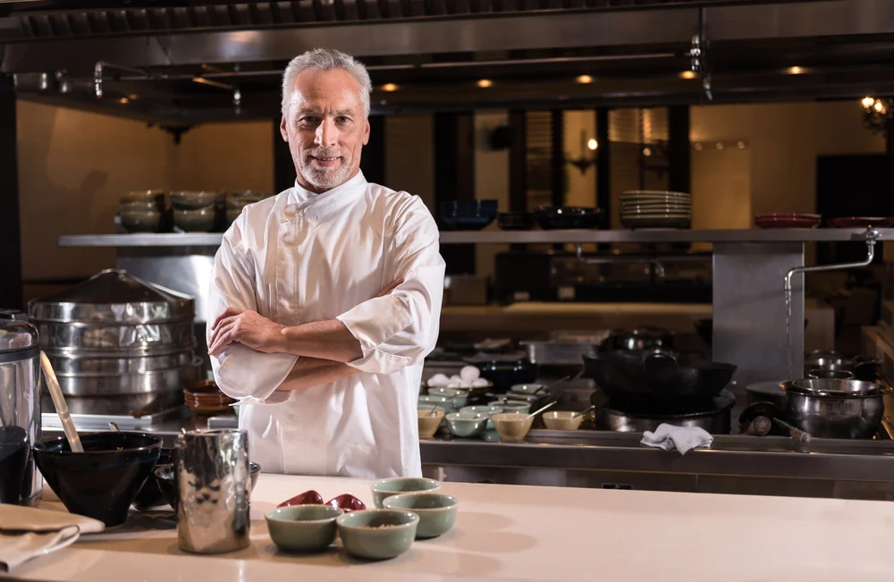
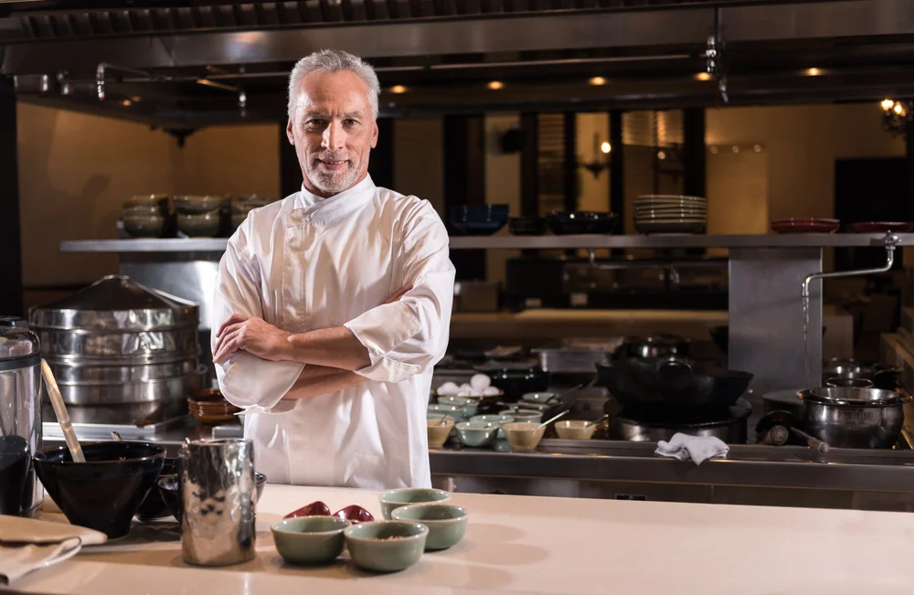

About us
Exquisite Elegance in the Heart of London
Welcome to La Citadelle, where we redefine the art of fine dining in the heart of London. Nestled in one of the city's most iconic locations, our restaurant stands as a beacon of culinary excellence, offering an unforgettable journey for all who enter
Our Culinary Vision
Our culinary team is dedicated to crafting a symphony of flavors that reflect both tradition and innovation. Led by our renowned Executive Chef, Antoine Delaunay, our kitchen is a hub of creativity and passion. Every dish that leaves our kitchen is a masterpiece that showcases the finest local and seasonal ingredients.
An Ambiance of Luxury
Step inside our restaurant, and you'll find yourself immersed in an ambiance of luxury and sophistication. With elegant décor, soft lighting, and an attentive service team, we set the stage for an unforgettable dining experience. Our intimate dining spaces are perfect for romantic evenings, celebrations, or simply savoring the pleasure of refined cuisine.
Unparalleled Wine Selection
To complement our exquisite dishes, we boast an extensive wine cellar. Our sommeliers have curated a wine list that spans the globe, offering the perfect pairing for every course. From renowned classics to emerging vintages, our wine selection elevates your dining experience.
Private Dining and Events
La Citadelle offers exclusive private dining spaces, ideal for hosting special occasions and corporate events. Whether it's an intimate family gathering, a business meeting, or a lavish celebration, our team ensures that every detail is tailored to perfection.
A Commitment to Sustainability
We hold a deep commitment to sustainability and the environment. Our ingredients are sourced from local farms and suppliers who share our values, and we continuously strive to minimize our environmental footprint.
Events & Private Dining
Our restaurant provides the perfect setting for your special events and celebrations. Whether it's an intimate dinner for two or a grand celebration for a larger group, we offer exquisite private dining options that can be tailored to your needs.
Private Dining Rooms:
Elegant Intimacy - Capacity: Up to 10 guests
Description: Experience an intimate dining atmosphere with tailored service. Ideal for romantic dinners and small gatherings.
The Grand Banquet - Capacity: Up to 40 guests
For larger celebrations, our grand banquet room offers a spacious and opulent setting. Perfect for weddings, anniversaries, and corporate events.
Customized Menus:
Our culinary team will craft a personalized menu for your event, featuring our chef's signature dishes and wine pairings to complement every course. Dietary preferences and allergies are carefully accommodated.
Special Occasions:
Our private dining spaces are available for a variety of occasions, including:
- Anniversaries
- Weddings and Receptions
- Birthday Celebrations
- Corporate Meetings and Events
- Holiday Parties
Events Planning:
Our dedicated events team will assist you in planning every detail of your event, from selecting the perfect menu to coordinating decorations and entertainment.
Reservations
Join us at La Citadelle for an unforgettable journey of taste and elegance. We invite you to reserve your table and experience a world of culinary delights that define the essence of fine dining. Whether you're a London local or visiting our beautiful city, we look forward to welcoming you with warmth and gastronomic delights. At La Citadelle, we don't just serve meals; we create memories. Come and indulge in the epitome of fine dining in London. To book a private dining experience or inquire about hosting an event at our restaurant, please contact our events coordinator at
Please note that availability for private dining may be subject to reservation and event planning.
Our team
 
